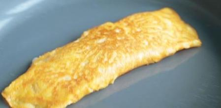

Receta tortilla-francesa

Descripción
La tortilla francesa, tortilla de huevos u omelet es un plato elaborado con huevo
batido y cocinado con mantequilla o aceite, en una sartén.
La forma que adquiere durante el cocinado es similar al de una hoja redonda,
extendida o plegada sobre sí misma.
Este plato es muy versátil, existiendo numerosas variaciones.
Ingredientes:
- 3 huevos medianos
- 10ml de aceite de oliva virgen extra
- sal
- 5ml de nata líquida
Pasos:
-
Elegimos un plato hondo para batir los huevos, que sea lo suficientemente profundo
como para poder inclinarlo ligeramente sin salpicar.
-
Cascamos los huevos y los echamos en el plato. Si tenemos dudas de si están frescos
hacemos un paso intermedio para comprobarlo:
llenamos un vaso con agua del tiempo y sumergimos los huevos uno a uno, si se van
al fondo están perfectos, en caso de que floten los descartamos inmediatamente.
-
Espolvoreamos una pizca de sal sobre el plato. Removemos enérgicamente con la ayuda
de un tenedor hasta tener una mezcla uniforme, no deberíamos ver restos de las claras.
-
Ponemos una sartén a fuego medio-alto y echamos un chorro de aceite de oliva virgen extra.
Dejamos calentar.
-
Comprobamos que el aceite está caliente: tomamos un poco de huevo batido con la punta del
tenedor y lo dejamos caer en la sartén, si empieza a dorarse inmediatamente ya tenemos la
temperatura adecuada.
-
Echamos los huevos batidos y cubrimos todo el fondo. Dejamos que cuaje.
Cuando la parte inferior ha cuajado doblamos la tortilla a la mitad con la ayuda de una paleta de cocina muy fina.
Hacemos una especie de media luna y aplastamos ligeramente con la paleta.
-
Dejamos medio minuto y damos la vuelta, dejando que se haga medio minuto más por el otro lado.
Retiramos a un plato y servimos inmediatamente.